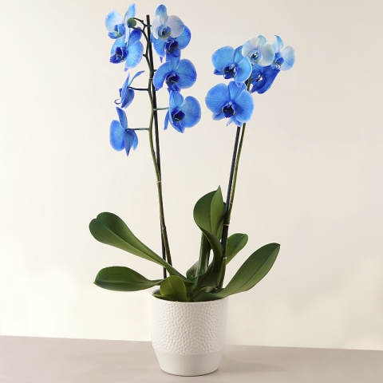

Exotic Blue
Arriesgada y especial. Así es la orquídea azul. El color de Exotic Blue no deja indiferente a nadie y, al mismo tiempo, consigue transmitir paz y armonía. Es una flor excéntrica y diferente a otras, con la que te harás ver y, además, conseguirás sorprender a quien la reciba. Ideal para… Sorprender a alguien.